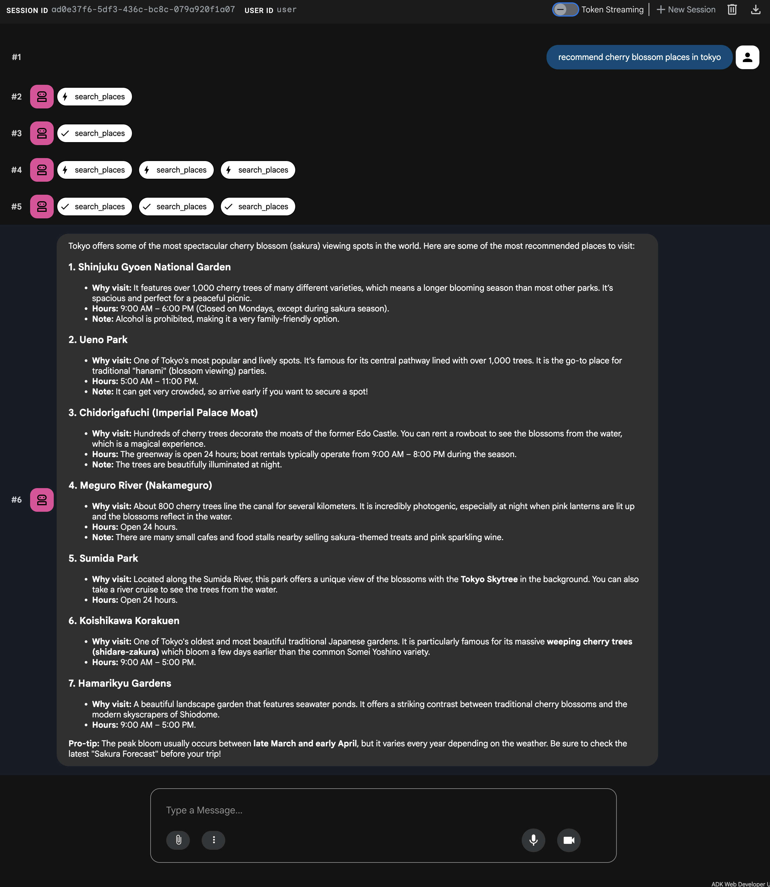

Model Context Protocol Tools¶
This guide walks you through two ways of integrating Model Context Protocol (MCP) with ADK.
MCP tools for ADK
For a list of pre-built MCP tools for ADK, see Tools and Integrations.
What is Model Context Protocol (MCP)?¶
The Model Context Protocol (MCP) is an open standard designed to standardize how Large Language Models (LLMs) like Gemini and Claude communicate with external applications, data sources, and tools. Think of it as a universal connection mechanism that simplifies how LLMs obtain context, execute actions, and interact with various systems.
MCP follows a client-server architecture, defining how data (resources), interactive templates (prompts), and actionable functions (tools) are exposed by an MCP server and consumed by an MCP client (which could be an LLM host application or an AI agent).
This guide covers two primary integration patterns:
- Using Existing MCP Servers within ADK: An ADK agent acts as an MCP client, leveraging tools provided by external MCP servers.
- Exposing ADK Tools via an MCP Server: Building an MCP server that wraps ADK tools, making them accessible to any MCP client.
Key considerations¶
When you start building with the Model Context Protocol (MCP) and ADK, these key architectural differences will help you design more stable and efficient agents:
-
Protocol vs. Library: MCP is a protocol specification, defining communication rules. ADK is a Python library/framework for building agents. McpToolset bridges these by implementing the client side of the MCP protocol within the ADK framework. Conversely, building an MCP server in Python requires using the model-context-protocol library.
-
ADK Tools vs. MCP Tools:
- ADK Tools (BaseTool, FunctionTool, AgentTool, etc.) are Python objects designed for direct use within the ADK's LlmAgent and Runner.
- MCP Tools are capabilities exposed by an MCP Server according to the protocol's schema. McpToolset makes these look like ADK tools to an LlmAgent.
-
Asynchronous nature: Both ADK and the MCP Python library are heavily based on the asyncio Python library. Tool implementations and server handlers should generally be async functions.
-
Stateful sessions (MCP): MCP establishes stateful, persistent connections between a client and server instance. This differs from typical stateless REST APIs.
- Deployment: This statefulness can pose challenges for scaling and deployment, especially for remote servers handling many users. The original MCP design often assumed client and server were co-located. Managing these persistent connections requires careful infrastructure considerations (e.g., load balancing, session affinity).
- ADK McpToolset: Manages this connection lifecycle. The exit_stack pattern shown in the examples is crucial for ensuring the connection (and potentially the server process) is properly terminated when the ADK agent finishes.
-
Session persistence: The
MCPToolsetsupports object serialization viagetstateandsetstatemethods. This feature helps your agent maintain its context when deployed to managed environments like Cloud Run or Google Kubernetes Engine (GKE).
!!! Note: While the agent preserves its session state during lifecycle events, active MCP connections are not automatically re-established upon restoration. The agent will re-initialize its connection to the MCP server as needed after the process is restored to ensure a reliable and up-to-date link.
Prerequisites¶
Before you begin, ensure you have the following set up:
- Set up ADK: Follow the standard ADK setup instructions in the quickstart.
- Install/update Python/Java: MCP requires Python version of 3.9 or higher for Python or Java 17 or higher.
- Setup Node.js and npx: (Python only) Many community MCP servers are distributed as Node.js packages and run using
npx. Install Node.js (which includes npx) if you haven't already. For details, see https://nodejs.org/en. - Verify Installations: (Python only) Confirm
adkandnpxare in your PATH within the activated virtual environment:
1. Using MCP servers with ADK agents (ADK as an MCP client) in adk web¶
This section demonstrates how to integrate tools from external MCP (Model Context Protocol) servers into your ADK agents. This is the most common integration pattern when your ADK agent needs to use capabilities provided by an existing service that exposes an MCP interface. You will see how the McpToolset class can be directly added to your agent's tools list, enabling seamless connection to an MCP server, discovery of its tools, and making them available for your agent to use. These examples primarily focus on interactions within the adk web development environment.
McpToolset class¶
The McpToolset class is ADK's primary mechanism for integrating tools from an MCP server. When you include an McpToolset instance in your agent's tools list, it automatically handles the interaction with the specified MCP server. Here's how it works:
- Connection Management: On initialization,
McpToolsetestablishes and manages the connection to the MCP server. This can be a local server process (usingStdioConnectionParamsfor communication over standard input/output) or a remote server (usingSseConnectionParamsfor Server-Sent Events). The toolset also handles the graceful shutdown of this connection when the agent or application terminates. - Tool Discovery & Adaptation: Once connected,
McpToolsetqueries the MCP server for its available tools (via thelist_toolsMCP method). It then converts the schemas of these discovered MCP tools into ADK-compatibleBaseToolinstances. - Exposure to Agent: These adapted tools are then made available to your
LlmAgentas if they were native ADK tools. - Proxying Tool Calls: When your
LlmAgentdecides to use one of these tools,McpToolsettransparently proxies the call (using thecall_toolMCP method) to the MCP server, sends the necessary arguments, and returns the server's response back to the agent. - Filtering (Optional): You can use the
tool_filterparameter when creating anMcpToolsetto select a specific subset of tools from the MCP server, rather than exposing all of them to your agent.
The following examples demonstrate how to use McpToolset within the adk web development environment. For scenarios where you need more fine-grained control over the MCP connection lifecycle or are not using adk web, refer to the "Using MCP Tools in your own Agent out of adk web" section later in this page.
Example 1: File System MCP Server¶
This Python example demonstrates connecting to a local MCP server that provides file system operations.
Step 1: Define your Agent with McpToolset¶
Create an agent.py file (e.g., in ./adk_agent_samples/mcp_agent/agent.py). The McpToolset is instantiated directly within the tools list of your LlmAgent.
- Important: Replace
"/path/to/your/folder"in theargslist with the absolute path to an actual folder on your local system that the MCP server can access. - Important: Place the
.envfile in the parent directory of the./adk_agent_samplesdirectory.
# ./adk_agent_samples/mcp_agent/agent.py
import os # Required for path operations
from google.adk.agents import LlmAgent
from google.adk.tools.mcp_tool import McpToolset
from google.adk.tools.mcp_tool.mcp_session_manager import StdioConnectionParams
from mcp import StdioServerParameters
# It's good practice to define paths dynamically if possible,
# or ensure the user understands the need for an ABSOLUTE path.
# For this example, we'll construct a path relative to this file,
# assuming '/path/to/your/folder' is in the same directory as agent.py.
# REPLACE THIS with an actual absolute path if needed for your setup.
TARGET_FOLDER_PATH = os.path.join(os.path.dirname(os.path.abspath(__file__)), "/path/to/your/folder")
# Ensure TARGET_FOLDER_PATH is an absolute path for the MCP server.
# If you created ./adk_agent_samples/mcp_agent/your_folder,
root_agent = LlmAgent(
model='gemini-flash-latest',
name='filesystem_assistant_agent',
instruction='Help the user manage their files. You can list files, read files, etc.',
tools=[
McpToolset(
connection_params=StdioConnectionParams(
server_params = StdioServerParameters(
command='npx',
args=[
"-y", # Argument for npx to auto-confirm install
"@modelcontextprotocol/server-filesystem",
# IMPORTANT: This MUST be an ABSOLUTE path to a folder the
# npx process can access.
# Replace with a valid absolute path on your system.
# For example: "/Users/youruser/accessible_mcp_files"
# or use a dynamically constructed absolute path:
os.path.abspath(TARGET_FOLDER_PATH),
],
),
),
# Optional: Filter which tools from the MCP server are exposed
# tool_filter=['list_directory', 'read_file']
)
],
)
Step 2: Create an __init__.py file¶
Ensure you have an __init__.py in the same directory as agent.py to make it a discoverable Python package for ADK.
Step 3: Run adk web and Interact¶
Navigate to the parent directory of mcp_agent (e.g., adk_agent_samples) in your terminal and run:
Note for Windows users
When hitting the _make_subprocess_transport NotImplementedError, consider using adk web --no-reload instead.
Once the ADK Web UI loads in your browser:
- Select the
filesystem_assistant_agentfrom the agent dropdown. - Try prompts like:
- "List files in the current directory."
- "Can you read the file named sample.txt?" (assuming you created it in
TARGET_FOLDER_PATH). - "What is the content of
another_file.md?"
You should see the agent interacting with the MCP file system server, and the server's responses (file listings, file content) relayed through the agent. The adk web console (terminal where you ran the command) might also show logs from the npx process if it outputs to stderr.

For Java, refer to the following sample to define an agent that initializes the McpToolset:
package agents;
import com.google.adk.agents.LlmAgent;
import com.google.adk.runner.InMemoryRunner;
import com.google.adk.sessions.SessionKey;
import com.google.adk.tools.mcp.McpToolset;
import com.google.adk.tools.mcp.StdioServerParameters;
import com.google.genai.types.Content;
import com.google.genai.types.Part;
import java.util.List;
public class McpAgentCreator {
/**
* Initializes an McpToolset, retrieves tools from an MCP server using stdio,
* creates an LlmAgent with these tools, sends a prompt to the agent,
* and ensures the toolset is closed.
* @param args Command line arguments (not used).
*/
public static void main(String[] args) {
//Note: you may have permissions issues if the folder is outside home
String yourFolderPath = "~/path/to/folder";
StdioServerParameters serverParams = StdioServerParameters.builder()
.command("npx")
.args(List.of(
"-y",
"@modelcontextprotocol/server-filesystem",
yourFolderPath
))
.build();
try (McpToolset toolset = new McpToolset(serverParams.toServerParameters())) {
LlmAgent agent = LlmAgent.builder()
.model("gemini-flash-latest")
.name("enterprise_assistant")
.description("An agent to help users access their file systems")
.instruction(
"Help user accessing their file systems. You can list files in a directory."
)
.tools(toolset)
.build();
System.out.println("Agent created: " + agent.name());
InMemoryRunner runner = new InMemoryRunner(agent);
String userId = "user123";
String sessionId = "1234";
String promptText = "Which files are in this directory - " + yourFolderPath + "?";
// Explicitly create the session first
SessionKey sessionKey = runner.sessionService().createSession(runner.appName(), userId, null, sessionId).blockingGet().sessionKey();
System.out.println("Session created: " + sessionId + " for user: " + userId);
Content promptContent = Content.fromParts(Part.fromText(promptText));
System.out.println("\nSending prompt: \"" + promptText + "\" to agent...\n");
runner.runAsync(sessionKey, promptContent)
.blockingForEach(event -> {
System.out.println("Event received: " + event.toJson());
});
} catch (Exception e) {
System.err.println("An error occurred: " + e.getMessage());
e.printStackTrace();
}
}
}
Assuming a folder containing three files named first, second and third, successful response will look like this:
Event received: {"id":"163a449e-691a-48a2-9e38-8cadb6d1f136","invocationId":"e-c2458c56-e57a-45b2-97de-ae7292e505ef","author":"enterprise_assistant","content":{"parts":[{"functionCall":{"id":"adk-388b4ac2-d40e-4f6a-bda6-f051110c6498","args":{"path":"~/home-test"},"name":"list_directory"}}],"role":"model"},"actions":{"stateDelta":{},"artifactDelta":{},"requestedAuthConfigs":{}},"timestamp":1747377543788}
Event received: {"id":"8728380b-bfad-4d14-8421-fa98d09364f1","invocationId":"e-c2458c56-e57a-45b2-97de-ae7292e505ef","author":"enterprise_assistant","content":{"parts":[{"functionResponse":{"id":"adk-388b4ac2-d40e-4f6a-bda6-f051110c6498","name":"list_directory","response":{"text_output":[{"text":"[FILE] first\n[FILE] second\n[FILE] third"}]}}}],"role":"user"},"actions":{"stateDelta":{},"artifactDelta":{},"requestedAuthConfigs":{}},"timestamp":1747377544679}
Event received: {"id":"8fe7e594-3e47-4254-8b57-9106ad8463cb","invocationId":"e-c2458c56-e57a-45b2-97de-ae7292e505ef","author":"enterprise_assistant","content":{"parts":[{"text":"There are three files in the directory: first, second, and third."}],"role":"model"},"actions":{"stateDelta":{},"artifactDelta":{},"requestedAuthConfigs":{}},"timestamp":1747377544689}
For TypeScript, you can define an agent that initializes the MCPToolset as follows:
import 'dotenv/config';
import {LlmAgent, MCPToolset} from "@google/adk";
// REPLACE THIS with an actual absolute path for your setup.
const TARGET_FOLDER_PATH = "/path/to/your/folder";
export const rootAgent = new LlmAgent({
model: "gemini-flash-latest",
name: "filesystem_assistant_agent",
instruction: "Help the user manage their files. You can list files, read files, etc.",
tools: [
// To filter tools, pass a list of tool names as the second argument
// to the MCPToolset constructor.
// e.g., new MCPToolset(connectionParams, ['list_directory', 'read_file'])
new MCPToolset(
{
type: "StdioConnectionParams",
serverParams: {
command: "npx",
args: [
"-y",
"@modelcontextprotocol/server-filesystem",
// IMPORTANT: This MUST be an ABSOLUTE path to a folder the
// npx process can access.
// Replace with a valid absolute path on your system.
// For example: "/Users/youruser/accessible_mcp_files"
TARGET_FOLDER_PATH,
],
},
}
)
],
});
Example 2: Google Maps Grounding Lite MCP Server¶
Google Maps Platform Grounding Lite is a service with Model Context Protocol (MCP) support that makes it easy to ground your AI applications with trusted geospatial data from Google Maps. The MCP server provides tools that allow LLMs to access capabilities for places, weather, and routes. You can try out Grounding Lite by enabling it in any tool that supports MCP servers.
Grounding Lite provides tools that allow LLMs to access the following Google Maps capabilities:
- Search places: Request information about places and get AI-generated place data summaries, as well as Place IDs, latitude and longitude coordinates, and Google Maps links for each of the places included in the summary. You can use the returned Place IDs and latitude and longitude coordinates with other Google Maps Platform APIs to show places on a map.
- Lookup weather: Request information about weather and return current conditions, hourly forecasts, and daily forecasts.
- Compute routes: Request information about driving or walking routes between two locations and return route distance and duration information.
Step 1: Enable the Maps Grounding Lite service on your Google Cloud project¶
- Set up your Google Cloud project if you haven’t got one.
- In the Google Cloud Console, choose the project you want to use for Grounding Lite.
- Enable Grounding Lite in the Google Cloud Console API Library.
- Get a Google Maps Platform API Key
Step 2: Define your Agent with McpToolset for Google Maps Grounding Lite¶
Modify your agent.py file (e.g., in ./adk_agent_samples/mcp_agent/agent.py). Replace YOUR_GOOGLE_MAPS_API_KEY with the actual API key you obtained.
# ./adk_agent_samples/mcp_agent/agent.py
import os
from google.adk.agents.llm_agent import Agent
from google.adk.tools.mcp_tool import McpToolset
from google.adk.tools.mcp_tool.mcp_session_manager import StreamableHTTPConnectionParams
# Retrieve the API key from an environment variable or directly insert it.
# Using an environment variable is generally safer.
# Ensure this environment variable is set in the terminal where you run 'adk web'.
# Example: export GOOGLE_MAPS_API_KEY="YOUR_ACTUAL_KEY"
GOOGLE_MAPS_API_KEY = os.getenv("GOOGLE_MAPS_API_KEY")
if not GOOGLE_MAPS_API_KEY:
# Fallback or direct assignment for testing - NOT RECOMMENDED FOR PRODUCTION
GOOGLE_MAPS_API_KEY = "YOUR_GOOGLE_MAPS_API_KEY_HERE" # Replace if not using env var
if GOOGLE_MAPS_API_KEY == "YOUR_GOOGLE_MAPS_API_KEY_HERE":
print("WARNING: GOOGLE_MAPS_API_KEY is not set. Please set it as an environment variable or in the script.")
# You might want to raise an error or exit if the key is crucial and not found.
root_agent = Agent(
model='gemini-flash-latest',
name='travel_planner_agent',
description='A helpful assistant for planning travel routes.',
tools=[
McpToolset(
connection_params=StreamableHTTPConnectionParams(
url="https://mapstools.googleapis.com/mcp",
headers={
"X-Goog-Api-Key": GOOGLE_MAPS_API_KEY,
"Content-Type": "application/json",
"Accept": "application/json, text/event-stream"
}
)
)
]
)
Step 3: Ensure __init__.py Exists¶
If you created this in Example 1, you can skip this. Otherwise, ensure you have an __init__.py in the ./adk_agent_samples/mcp_agent/ directory:
Step 4: Run adk web and Interact¶
-
Set Environment Variable (Recommended): Before running
Replaceadk web, it's best to set your Google Maps API key as an environment variable in your terminal:YOUR_ACTUAL_GOOGLE_MAPS_API_KEYwith your key. -
Run
adk web: Navigate to the parent directory ofmcp_agent(e.g.,adk_agent_samples) and run: -
Interact in the UI:
- Select the
travel_planner_agent. - Try prompts like:
- "I will be in San Francisco tomorrow. What’s the weather like?"
- "Find coffee shops near Golden Gate Park."
- "Get directions from GooglePlex to SFO."
- Select the
You should see the agent use the Google Maps Grounding Lite MCP tools to provide directions or location-based information.

For Java, refer to the following sample to define an agent that initializes the McpToolset:
package agents;
import com.google.adk.agents.LlmAgent;
import com.google.adk.runner.InMemoryRunner;
import com.google.adk.sessions.SessionKey;
import com.google.adk.tools.mcp.McpToolset;
import com.google.adk.tools.mcp.StdioServerParameters;
import com.google.genai.types.Content;
import com.google.genai.types.Part;
import java.util.HashMap;
import java.util.Map;
public class MapsAgentCreator {
/**
* Initializes an McpToolset for Google Maps Grounding Lite,
* creates an LlmAgent, sends a map-related prompt, and closes the toolset.
*/
public static void main(String[] args) {
// Read from environment variables
String googleMapsApiKey = System.getenv("GOOGLE_MAPS_API_KEY");
if (googleMapsApiKey == null || googleMapsApiKey.trim().isEmpty()) {
// Fallback or direct assignment for testing - NOT RECOMMENDED FOR PRODUCTION
googleMapsApiKey = "YOUR_GOOGLE_MAPS_API_KEY_HERE"; // Replace if not using env var
if ("YOUR_GOOGLE_MAPS_API_KEY_HERE".equals(googleMapsApiKey)) {
System.out.println("WARNING: GOOGLE_MAPS_API_KEY is not set. Please set it as an environment variable or in the script.");
}
}
// Setup the headers for the remote MCP connection
Map<String, String> headers = new HashMap<>();
headers.put("X-Goog-Api-Key", googleMapsApiKey);
headers.put("Content-Type", "application/json");
headers.put("Accept", "application/json, text/event-stream");
// Use StreamableHttpServerParameters for the remote HTTP MCP server connection
StreamableHttpServerParameters serverParams = StreamableHttpServerParameters.builder("https://mapstools.googleapis.com/mcp")
.headers(headers)
.build();
try (McpToolset toolset = new McpToolset(serverParams)) {
// Build the Agent with the configured Toolset
LlmAgent agent = LlmAgent.builder()
.model("gemini-flash-latest")
.name("travel_planner_agent")
.description("A helpful assistant for planning travel routes.")
.tools(toolset)
.build();
System.out.println("Agent created: " + agent.name());
// Set up the runner and session
InMemoryRunner runner = new InMemoryRunner(agent);
String userId = "maps-user-" + System.currentTimeMillis();
String sessionId = "maps-session-" + System.currentTimeMillis();
String promptText = "Please give me directions to the nearest pharmacy to Madison Square Garden.";
// Explicitly create the session first
SessionKey sessionKey = runner.sessionService().createSession(runner.appName(), userId, null, sessionId).blockingGet().sessionKey();
System.out.println("Session created: " + sessionId + " for user: " + userId);
Content promptContent = Content.fromParts(Part.fromText(promptText));
System.out.println("\nSending prompt: \"" + promptText + "\" to agent...\n");
// Execute the prompt asynchronously and print the streamed events
runner.runAsync(sessionKey, promptContent)
.blockingForEach(event -> {
System.out.println("Event received: " + event.toJson());
});
} catch (Exception e) {
System.err.println("An error occurred: " + e.getMessage());
e.printStackTrace();
}
}
}
For TypeScript, refer to the following sample to define an agent that initializes the MCPToolset:
import 'dotenv/config';
import {LlmAgent, MCPToolset} from "@google/adk";
// Retrieve the API key from an environment variable.
// Ensure this environment variable is set in the terminal where you run 'adk web'.
// Example: export GOOGLE_MAPS_API_KEY="YOUR_ACTUAL_KEY"
const googleMapsApiKey = process.env.GOOGLE_MAPS_API_KEY;
if (!googleMapsApiKey) {
console.warn("WARNING: GOOGLE_MAPS_API_KEY is not set.");
// We throw an error here to prevent the agent from booting without its crucial grounding key
throw new Error('GOOGLE_MAPS_API_KEY is not provided, please run "export GOOGLE_MAPS_API_KEY=YOUR_ACTUAL_KEY" to add that.');
}
export const rootAgent = new LlmAgent({
model: "gemini-flash-latest",
name: "travel_planner_agent",
description: "A helpful assistant for planning travel.",
tools: [
new MCPToolset({
// Using SseConnectionParams to connect to the remote Grounding Lite service,
// mirroring Python's StreamableHTTPConnectionParams.
type: "SseConnectionParams",
url: "https://mapstools.googleapis.com/mcp",
headers: {
"X-Goog-Api-Key": googleMapsApiKey,
"Content-Type": "application/json",
"Accept": "application/json, text/event-stream"
}
})
],
});
2. Build an MCP server with ADK tools (MCP server exposing ADK)¶
This pattern allows you to wrap existing ADK tools and make them available to any standard MCP client application. The example in this section exposes the ADK load_web_page tool through a custom-built MCP server.
Summary of steps¶
You will create a standard Python MCP server application using the mcp library. Within this server, you will:
- Instantiate the ADK tool(s) you want to expose (e.g.,
FunctionTool(load_web_page)). - Implement the MCP server's
@app.list_tools()handler to advertise the ADK tool(s). This involves converting the ADK tool definition to the MCP schema using theadk_to_mcp_tool_typeutility fromgoogle.adk.tools.mcp_tool.conversion_utils. - Implement the MCP server's
@app.call_tool()handler. This handler will:- Receive tool call requests from MCP clients.
- Identify if the request targets one of your wrapped ADK tools.
- Execute the ADK tool's
.run_async()method. - Format the ADK tool's result into an MCP-compliant response (e.g.,
mcp.types.TextContent).
Prerequisites¶
Install the MCP server library in the same Python environment as your ADK installation:
Step 1: Create the MCP Server Script¶
Create a new Python file for your MCP server, for example, my_adk_mcp_server.py.
Step 2: Implement the Server Logic¶
Add the following code to my_adk_mcp_server.py. This script sets up an MCP server that exposes the ADK load_web_page tool.
# my_adk_mcp_server.py
import asyncio
import json
import os
from dotenv import load_dotenv
# MCP Server Imports
from mcp import types as mcp_types # Use alias to avoid conflict
from mcp.server.lowlevel import Server, NotificationOptions
from mcp.server.models import InitializationOptions
import mcp.server.stdio # For running as a stdio server
# ADK Tool Imports
from google.adk.tools.function_tool import FunctionTool
from google.adk.tools.load_web_page import load_web_page # Example ADK tool
# ADK <-> MCP Conversion Utility
from google.adk.tools.mcp_tool.conversion_utils import adk_to_mcp_tool_type
# --- Load Environment Variables (If ADK tools need them, e.g., API keys) ---
load_dotenv() # Create a .env file in the same directory if needed
# --- Prepare the ADK Tool ---
# Instantiate the ADK tool you want to expose.
# This tool will be wrapped and called by the MCP server.
print("Initializing ADK load_web_page tool...")
adk_tool_to_expose = FunctionTool(load_web_page)
print(f"ADK tool '{adk_tool_to_expose.name}' initialized and ready to be exposed via MCP.")
# --- End ADK Tool Prep ---
# --- MCP Server Setup ---
print("Creating MCP Server instance...")
# Create a named MCP Server instance using the mcp.server library
app = Server("adk-tool-exposing-mcp-server")
# Implement the MCP server's handler to list available tools
@app.list_tools()
async def list_mcp_tools() -> list[mcp_types.Tool]:
"""MCP handler to list tools this server exposes."""
print("MCP Server: Received list_tools request.")
# Convert the ADK tool's definition to the MCP Tool schema format
mcp_tool_schema = adk_to_mcp_tool_type(adk_tool_to_expose)
print(f"MCP Server: Advertising tool: {mcp_tool_schema.name}")
return [mcp_tool_schema]
# Implement the MCP server's handler to execute a tool call
@app.call_tool()
async def call_mcp_tool(
name: str, arguments: dict
) -> list[mcp_types.Content]: # MCP uses mcp_types.Content
"""MCP handler to execute a tool call requested by an MCP client."""
print(f"MCP Server: Received call_tool request for '{name}' with args: {arguments}")
# Check if the requested tool name matches our wrapped ADK tool
if name == adk_tool_to_expose.name:
try:
# Execute the ADK tool's run_async method.
# Note: tool_context is None here because this MCP server is
# running the ADK tool outside of a full ADK Runner invocation.
# If the ADK tool requires ToolContext features (like state or auth),
# this direct invocation might need more sophisticated handling.
adk_tool_response = await adk_tool_to_expose.run_async(
args=arguments,
tool_context=None,
)
print(f"MCP Server: ADK tool '{name}' executed. Response: {adk_tool_response}")
# Format the ADK tool's response (often a dict) into an MCP-compliant format.
# Here, we serialize the response dictionary as a JSON string within TextContent.
# Adjust formatting based on the ADK tool's output and client needs.
response_text = json.dumps(adk_tool_response, indent=2)
# MCP expects a list of mcp_types.Content parts
return [mcp_types.TextContent(type="text", text=response_text)]
except Exception as e:
print(f"MCP Server: Error executing ADK tool '{name}': {e}")
# Return an error message in MCP format
error_text = json.dumps({"error": f"Failed to execute tool '{name}': {str(e)}"})
return [mcp_types.TextContent(type="text", text=error_text)]
else:
# Handle calls to unknown tools
print(f"MCP Server: Tool '{name}' not found/exposed by this server.")
error_text = json.dumps({"error": f"Tool '{name}' not implemented by this server."})
return [mcp_types.TextContent(type="text", text=error_text)]
# --- MCP Server Runner ---
async def run_mcp_stdio_server():
"""Runs the MCP server, listening for connections over standard input/output."""
# Use the stdio_server context manager from the mcp.server.stdio library
async with mcp.server.stdio.stdio_server() as (read_stream, write_stream):
print("MCP Stdio Server: Starting handshake with client...")
await app.run(
read_stream,
write_stream,
InitializationOptions(
server_name=app.name, # Use the server name defined above
server_version="0.1.0",
capabilities=app.get_capabilities(
# Define server capabilities - consult MCP docs for options
notification_options=NotificationOptions(),
experimental_capabilities={},
),
),
)
print("MCP Stdio Server: Run loop finished or client disconnected.")
if __name__ == "__main__":
print("Launching MCP Server to expose ADK tools via stdio...")
try:
asyncio.run(run_mcp_stdio_server())
except KeyboardInterrupt:
print("\nMCP Server (stdio) stopped by user.")
except Exception as e:
print(f"MCP Server (stdio) encountered an error: {e}")
finally:
print("MCP Server (stdio) process exiting.")
# --- End MCP Server ---
Step 3: Test your Custom MCP Server with an ADK Agent¶
Now, create an ADK agent that will act as a client to the MCP server you just built. This ADK agent will use McpToolset to connect to your my_adk_mcp_server.py script.
Create an agent.py (e.g., in ./adk_agent_samples/mcp_client_agent/agent.py):
# ./adk_agent_samples/mcp_client_agent/agent.py
import os
from google.adk.agents import LlmAgent
from google.adk.tools.mcp_tool import McpToolset
from google.adk.tools.mcp_tool.mcp_session_manager import StdioConnectionParams
from mcp import StdioServerParameters
# IMPORTANT: Replace this with the ABSOLUTE path to your my_adk_mcp_server.py script
PATH_TO_YOUR_MCP_SERVER_SCRIPT = "/path/to/your/my_adk_mcp_server.py" # <<< REPLACE
if PATH_TO_YOUR_MCP_SERVER_SCRIPT == "/path/to/your/my_adk_mcp_server.py":
print("WARNING: PATH_TO_YOUR_MCP_SERVER_SCRIPT is not set. Please update it in agent.py.")
# Optionally, raise an error if the path is critical
root_agent = LlmAgent(
model='gemini-flash-latest',
name='web_reader_mcp_client_agent',
instruction="Use the 'load_web_page' tool to fetch content from a URL provided by the user.",
tools=[
McpToolset(
connection_params=StdioConnectionParams(
server_params = StdioServerParameters(
command='python3', # Command to run your MCP server script
args=[PATH_TO_YOUR_MCP_SERVER_SCRIPT], # Argument is the path to the script
)
)
# tool_filter=['load_web_page'] # Optional: ensure only specific tools are loaded
)
],
)
And an __init__.py in the same directory:
To run the test:
-
Start your custom MCP server (optional, for separate observation): You can run your
It will print "Launching MCP Server..." and wait. The ADK agent (run viamy_adk_mcp_server.pydirectly in one terminal to see its logs:adk web) will then connect to this process if thecommandinStdioConnectionParamsis set up to execute it. (Alternatively,McpToolsetwill start this server script as a subprocess automatically when the agent initializes). -
Run
adk webfor the client agent: Navigate to the parent directory ofmcp_client_agent(e.g.,adk_agent_samples) and run: -
Interact in the ADK Web UI:
- Select the
web_reader_mcp_client_agent. - Try a prompt like: "Load the content from https://example.com"
- Select the
The ADK agent (web_reader_mcp_client_agent) will use McpToolset to start and connect to your my_adk_mcp_server.py. Your MCP server will receive the call_tool request, execute the ADK load_web_page tool, and return the result. The ADK agent will then relay this information. You should see logs from both the ADK Web UI (and its terminal) and potentially from your my_adk_mcp_server.py terminal if you ran it separately.
This example demonstrates how ADK tools can be encapsulated within an MCP server, making them accessible to a broader range of MCP-compliant clients, not just ADK agents.
Refer to the documentation, to try it out with Claude Desktop.
Advanced use cases¶
The following sections describe how to handle more advanced use cases with MCP Tools in agents.
Use MCP Tools without adk web¶
This section is relevant to you if:
- You are developing your own Agent using ADK
- And, you are NOT using
adk web, - And, you are exposing the agent via your own UI
Using MCP Tools requires a different setup than using regular tools, due to the fact that specs for MCP Tools are fetched asynchronously from the MCP Server running remotely, or in another process.
The following example is modified from the "Example 1: File System MCP Server" example above. The main differences are:
- Your tool and agent are created asynchronously
- You need to properly manage the exit stack, so that your agents and tools are destructed properly when the connection to MCP Server is closed.
# agent.py (modify get_tools_async and other parts as needed)
# ./adk_agent_samples/mcp_agent/agent.py
import os
import asyncio
from dotenv import load_dotenv
from google.genai import types
from google.adk.agents.llm_agent import LlmAgent
from google.adk.runners import Runner
from google.adk.sessions import InMemorySessionService
from google.adk.artifacts.in_memory_artifact_service import InMemoryArtifactService # Optional
from google.adk.tools.mcp_tool import McpToolset
from google.adk.tools.mcp_tool.mcp_session_manager import StdioConnectionParams
from mcp import StdioServerParameters
# Load environment variables from .env file in the parent directory
# Place this near the top, before using env vars like API keys
load_dotenv('../.env')
# Ensure TARGET_FOLDER_PATH is an absolute path for the MCP server.
TARGET_FOLDER_PATH = os.path.join(os.path.dirname(os.path.abspath(__file__)), "/path/to/your/folder")
# --- Step 1: Agent Definition ---
async def get_agent_async():
"""Creates an ADK Agent equipped with tools from the MCP Server."""
toolset = McpToolset(
# Use StdioConnectionParams for local process communication
connection_params=StdioConnectionParams(
server_params = StdioServerParameters(
command='npx', # Command to run the server
args=["-y", # Arguments for the command
"@modelcontextprotocol/server-filesystem",
TARGET_FOLDER_PATH],
),
),
tool_filter=['read_file', 'list_directory'] # Optional: filter specific tools
# For remote servers, you would use SseConnectionParams instead:
# connection_params=SseConnectionParams(url="http://remote-server:port/path", headers={...})
)
# Use in an agent
root_agent = LlmAgent(
model='gemini-flash-latest', # Adjust model name if needed based on availability
name='enterprise_assistant',
instruction='Help user accessing their file systems',
tools=[toolset], # Provide the MCP tools to the ADK agent
)
return root_agent, toolset
# --- Step 2: Main Execution Logic ---
async def async_main():
session_service = InMemorySessionService()
# Artifact service might not be needed for this example
artifacts_service = InMemoryArtifactService()
session = await session_service.create_session(
state={}, app_name='mcp_filesystem_app', user_id='user_fs'
)
# TODO: Change the query to be relevant to YOUR specified folder.
# e.g., "list files in the 'documents' subfolder" or "read the file 'notes.txt'"
query = "list files in the tests folder"
print(f"User Query: '{query}'")
content = types.Content(role='user', parts=[types.Part(text=query)])
root_agent, toolset = await get_agent_async()
runner = Runner(
app_name='mcp_filesystem_app',
agent=root_agent,
artifact_service=artifacts_service, # Optional
session_service=session_service,
)
print("Running agent...")
events_async = runner.run_async(
session_id=session.id, user_id=session.user_id, new_message=content
)
async for event in events_async:
print(f"Event received: {event}")
# Cleanup is handled automatically by the agent framework
# But you can also manually close if needed:
print("Closing MCP server connection...")
await toolset.close()
print("Cleanup complete.")
if __name__ == '__main__':
try:
asyncio.run(async_main())
except Exception as e:
print(f"An error occurred: {e}")
Handling progress updates¶
For long-running tools, McpToolset supports a progress_callback. This approach allows you to receive real-time updates from the MCP server. You can provide a simple callback function or a factory that creates callbacks with access to the runtime context, such as updating session state.
async def my_progress_callback(progress: float, total: float, message: str):
print(f"Progress: {progress}/{total} - {message}")
toolset = McpToolset(
connection_params=...,
progress_callback=my_progress_callback
)
Deploy Agents with MCP Tools¶
When deploying ADK agents that use MCP tools to production environments like Cloud Run, GKE, or Agent Runtime, you need to consider how MCP connections will work in containerized and distributed environments.
Critical Deployment Requirement: Synchronous Agent Definition¶
⚠️ Important: When deploying agents with MCP tools, the agent and its McpToolset must be defined synchronously in your agent.py file. While adk web allows for asynchronous agent creation, deployment environments require synchronous instantiation.
# ✅ CORRECT: Synchronous agent definition for deployment
import os
from google.adk.agents.llm_agent import LlmAgent
from google.adk.tools.mcp_tool import McpToolset
from google.adk.tools.mcp_tool.mcp_session_manager import StdioConnectionParams
from mcp import StdioServerParameters
_allowed_path = os.path.dirname(os.path.abspath(__file__))
root_agent = LlmAgent(
model='gemini-flash-latest',
name='enterprise_assistant',
instruction=f'Help user accessing their file systems. Allowed directory: {_allowed_path}',
tools=[
McpToolset(
connection_params=StdioConnectionParams(
server_params=StdioServerParameters(
command='npx',
args=['-y', '@modelcontextprotocol/server-filesystem', _allowed_path],
),
timeout=5, # Configure appropriate timeouts
),
# Filter tools for security in production
tool_filter=[
'read_file', 'read_multiple_files', 'list_directory',
'directory_tree', 'search_files', 'get_file_info',
'list_allowed_directories',
],
)
],
)
# ❌ WRONG: Asynchronous patterns don't work in deployment
async def get_agent(): # This won't work for deployment
toolset = await create_mcp_toolset_async()
return LlmAgent(tools=[toolset])
Quick Deployment Commands¶
Agent Runtime¶
uv run adk deploy agent_engine \
--project=<your-gcp-project-id> \
--region=<your-gcp-region> \
--staging_bucket="gs://<your-gcs-bucket>" \
--display_name="My MCP Agent" \
./path/to/your/agent_directory
Cloud Run¶
uv run adk deploy cloud_run \
--project=<your-gcp-project-id> \
--region=<your-gcp-region> \
--service_name=<your-service-name> \
./path/to/your/agent_directory
Deployment Patterns¶
Pattern 1: Self-Contained Stdio MCP Servers¶
For MCP servers that can be packaged as npm packages or Python modules (like @modelcontextprotocol/server-filesystem), you can include them directly in your agent container:
Container Requirements:
# Example for npm-based MCP servers
FROM python:3.13-slim
# Install Node.js and npm for MCP servers
RUN apt-get update && apt-get install -y nodejs npm && rm -rf /var/lib/apt/lists/*
# Install your Python dependencies
COPY requirements.txt .
RUN pip install -r requirements.txt
# Copy your agent code
COPY . .
# Your agent can now use StdioConnectionParams with 'npx' commands
CMD ["python", "main.py"]
Agent Configuration:
# This works in containers because npx and the MCP server run in the same environment
McpToolset(
connection_params=StdioConnectionParams(
server_params=StdioServerParameters(
command='npx',
args=["-y", "@modelcontextprotocol/server-filesystem", "/app/data"],
),
),
)
Pattern 2: Remote MCP Servers (Streamable HTTP)¶
For production deployments requiring scalability, deploy MCP servers as separate services and connect via Streamable HTTP:
MCP Server Deployment (Cloud Run):
# deploy_mcp_server.py - Separate Cloud Run service using Streamable HTTP
import contextlib
import logging
from collections.abc import AsyncIterator
from typing import Any
import anyio
import click
import mcp.types as types
from mcp.server.lowlevel import Server
from mcp.server.streamable_http_manager import StreamableHTTPSessionManager
from starlette.applications import Starlette
from starlette.routing import Mount
from starlette.types import Receive, Scope, Send
logger = logging.getLogger(__name__)
def create_mcp_server():
"""Create and configure the MCP server."""
app = Server("adk-mcp-streamable-server")
@app.call_tool()
async def call_tool(name: str, arguments: dict[str, Any]) -> list[types.ContentBlock]:
"""Handle tool calls from MCP clients."""
# Example tool implementation - replace with your actual ADK tools
if name == "example_tool":
result = arguments.get("input", "No input provided")
return [
types.TextContent(
type="text",
text=f"Processed: {result}"
)
]
else:
raise ValueError(f"Unknown tool: {name}")
@app.list_tools()
async def list_tools() -> list[types.Tool]:
"""List available tools."""
return [
types.Tool(
name="example_tool",
description="Example tool for demonstration",
inputSchema={
"type": "object",
"properties": {
"input": {
"type": "string",
"description": "Input text to process"
}
},
"required": ["input"]
}
)
]
return app
def main(port: int = 8080, json_response: bool = False):
"""Main server function."""
logging.basicConfig(level=logging.INFO)
app = create_mcp_server()
# Create session manager with stateless mode for scalability
session_manager = StreamableHTTPSessionManager(
app=app,
event_store=None,
json_response=json_response,
stateless=True, # Important for Cloud Run scalability
)
async def handle_streamable_http(scope: Scope, receive: Receive, send: Send) -> None:
await session_manager.handle_request(scope, receive, send)
@contextlib.asynccontextmanager
async def lifespan(app: Starlette) -> AsyncIterator[None]:
"""Manage session manager lifecycle."""
async with session_manager.run():
logger.info("MCP Streamable HTTP server started!")
try:
yield
finally:
logger.info("MCP server shutting down...")
# Create ASGI application
starlette_app = Starlette(
debug=False, # Set to False for production
routes=[
Mount("/mcp", app=handle_streamable_http),
],
lifespan=lifespan,
)
import uvicorn
uvicorn.run(starlette_app, host="0.0.0.0", port=port)
if __name__ == "__main__":
main()
Agent Configuration for Remote MCP:
import java.util.Map;
import com.google.adk.tools.mcp.StreamableHttpServerParameters;
import com.google.adk.tools.mcp.McpToolset;
// Your ADK agent connects to the remote MCP service via Streamable HTTP
StreamableHttpServerParameters streamableParams = StreamableHttpServerParameters.builder()
.url("https://your-mcp-server-url.run.app/mcp")
.headers(Map.of("Authorization", "Bearer your-auth-token"))
.build();
McpToolset toolset = new McpToolset(streamableParams);
import com.google.adk.kt.tools.mcp.McpConnectionParameters
import com.google.adk.kt.tools.mcp.McpToolset
// Your ADK agent connects to the remote MCP service via Streamable HTTP
// headerProvider is suspend, so fetchToken() can await a fresh token per request;
// it also disables session reuse, so use StreamableHttp(headers = ...) for a fixed one.
val toolset =
McpToolset.McpToolsetConfig(
streamableHttpConnectionParams =
McpConnectionParameters.StreamableHttp(
url = "https://your-mcp-server-url.run.app/mcp",
),
).toToolset(headerProvider = { mapOf("Authorization" to "Bearer ${fetchToken()}") })
Pattern 3: Sidecar MCP Servers (GKE)¶
In Kubernetes environments, you can deploy MCP servers as sidecar containers:
# deployment.yaml - GKE with MCP sidecar
apiVersion: apps/v1
kind: Deployment
metadata:
name: adk-agent-with-mcp
spec:
template:
spec:
containers:
# Main ADK agent container
- name: adk-agent
image: your-adk-agent:latest
ports:
- containerPort: 8080
env:
- name: MCP_SERVER_URL
value: "http://localhost:8081"
# MCP server sidecar
- name: mcp-server
image: your-mcp-server:latest
ports:
- containerPort: 8081
Connection Management Considerations¶
Stdio Connections¶
- Pros: Simple setup, process isolation, works well in containers
- Cons: Process overhead, not suitable for high-scale deployments
- Best for: Development, single-tenant deployments, simple MCP servers
SSE/HTTP Connections¶
- Pros: Network-based, scalable, can handle multiple clients
- Cons: Requires network infrastructure, authentication complexity
- Best for: Production deployments, multi-tenant systems, external MCP services
Production Deployment Checklist¶
When deploying agents with MCP tools to production:
✅ Connection Lifecycle - Ensure proper cleanup of MCP connections using exit_stack patterns - Configure appropriate timeouts for connection establishment and requests - Implement retry logic for transient connection failures
✅ Resource Management - Monitor memory usage for stdio MCP servers (each spawns a process) - Configure appropriate CPU/memory limits for MCP server processes - Consider connection pooling for remote MCP servers
✅ Security
- Use authentication headers for remote MCP connections
- Restrict network access between ADK agents and MCP servers
- Filter MCP tools using tool_filter to limit exposed functionality
- Validate MCP tool inputs to prevent injection attacks
- Use restrictive file paths for filesystem MCP servers (e.g., os.path.dirname(os.path.abspath(__file__)))
- Consider read-only tool filters for production environments
✅ Monitoring & Observability - Log MCP connection establishment and teardown events - Monitor MCP tool execution times and success rates - Set up alerts for MCP connection failures
✅ Scalability - For high-volume deployments, prefer remote MCP servers over stdio - Configure session affinity if using stateful MCP servers - Consider MCP server connection limits and implement circuit breakers
Environment-Specific Configurations¶
Cloud Run¶
# Cloud Run environment variables for MCP configuration
import os
# Detect Cloud Run environment
if os.getenv('K_SERVICE'):
# Use remote MCP servers in Cloud Run
mcp_connection = SseConnectionParams(
url=os.getenv('MCP_SERVER_URL'),
headers={'Authorization': f"Bearer {os.getenv('MCP_AUTH_TOKEN')}"}
)
else:
# Use stdio for local development
mcp_connection = StdioConnectionParams(
server_params=StdioServerParameters(
command='npx',
args=["-y", "@modelcontextprotocol/server-filesystem", "/tmp"]
)
)
McpToolset(connection_params=mcp_connection)
GKE¶
# GKE-specific MCP configuration
# Use service discovery for MCP servers within the cluster
McpToolset(
connection_params=SseConnectionParams(
url="http://mcp-service.default.svc.cluster.local:8080/sse"
),
)
Agent Runtime¶
# Agent Runtime managed deployment
# Prefer lightweight, self-contained MCP servers or external services
McpToolset(
connection_params=SseConnectionParams(
url="https://your-managed-mcp-service.googleapis.com/sse",
headers={'Authorization': 'Bearer $(gcloud auth print-access-token)'}
),
)
Troubleshooting Deployment Issues¶
Common MCP Deployment Problems:
-
Stdio Process Startup Failures
-
Network Connectivity Issues
-
Resource Exhaustion
- Monitor container memory usage when using stdio MCP servers
- Set appropriate limits in Kubernetes deployments
- Use remote MCP servers for resource-intensive operations